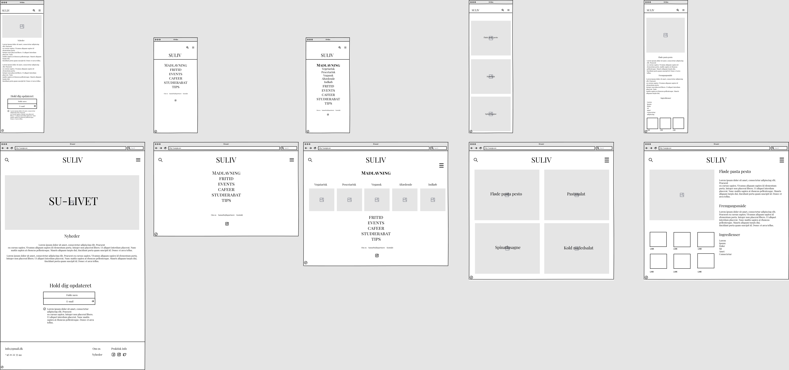

Tema - 3
Grundlæggende UX/UI
Om tema 3
I dette emne har vi fået indsigt i UX (brugeroplevelsesdesign) og UI (brugergrænsefladedesign). Vi skulle selv finde på et hjemmeside vi ville lave og om hvad. Vi havde frie tøjler til hvad den skulle handle om og hvordan den skulle se ud. Jeg valgte at lave en hjemmeside om.
Færdigheder
- At benytte sig af forskellige research metoder(Desk research og observationsresearch)
- At få inspiration og ideudvikle ved hjælp af moodboard, storyboard, Crazy 8's, solution sketch, sitemap og layoutdiagram.
- At udvikle wireframes og prototyper
- At lave forskellige tests (5 sekunders test og tænkehøjt tests, lighthouse test)
- At udvikle en forståelse for UX/UI konventioner
Afleveringer
- 03.01.01 - Research og idé
- 03.02.01 - Digital prototype
- 03.03.01 - Kodet site
- 03.04.01 - Præsentation
- 03.04.02 - Procesdokumentation
Research, moodboard, style tile og Storyboard
Jeg researchede andre kultur websites, som omhandlede det jeg ville lave om. Jeg valgte at lave en hjemmeside til studerende, og hvordan man stadig kan have et liv og hygge sig med sine venner, selvom pengepunge ikke rækker så langt.
Mit research gav mig et indblik i hvad mine hjemmeside skulle omhandler og hvordan den skulle se ud, hvilket ledte mig til mit moodboard. Der fandt jeg forskellige billeder der skulle afspejler min stemning til denne hjemmeside.
Ud fra mit interview har jeg lavet et storyboard, med Alma, hvor hun sidder og grubler over hun ikke kan være medtil nogetfordi hun er broke, og hun kigger i køleskabet og det eneste hun ser,er rugbrød...Hun sidder og surfer på internettet, som man jo gør, og finder tilfældigvis denne her hjemmeside, hvor man kan læse om tips til SU-livet, altså billigt mad og billige aktiviteter osv. Hun er derfor mega gladfor de her tips og det kan hjælpe hende megeti hverdagen. Hun pakker et tæppe, noget mad og en kaffe og tager over i parken med sine venner, hvor de nyder solskinsvejret med eget medbragt mad og drikke.
Moodboard

Storyboard

Style Tile

Desk Research

Solutionssketch, Wireframe og Prototype
Her lavede jeg min wireframe, som var mit første udgangspunkt hjemmesidens visuelle udtryk.
Min prototype er udviklet baseret på min wireframe, som gav mig endnu mere klarhed om hvordan den skulle se ud.
Mit endelige resultat er endt en smule anderledes end min prototype, da der var nogle ting ikke kunne finde ud af, blandt andet at lave en åben burgermenu. Men det ved jeg nu, og fremover er jeg klar over mine egne færdigheder.
Wireframe
Prototype

Solution sketch